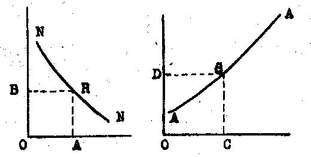
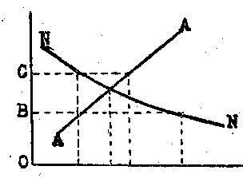

Librairie de Médicis — 1948 (deuxième édition)
par Richard von Strigl
traduit par P. Ochwald
Nous commencerons l'analyse de la vie économique par quelques questions touchant l'étude des prix. Il saute immédiatement aux yeux que, dans un prix, deux choses noue intéressent : Comment établit-on le prix d'un objet ? Et ensuite, quelle action, quel attrait, ce prix exercera-t-il sur les acheteurs ? Pour le premier point, une observation toute superficielle des conditions de notre économie actuelle montrera que, dans la formation des prix de divers objets, interviendront des facteurs très différents. Il n'est pas difficile de voir que jamais on ne pourra trouver une formule unique tenant compte de toutes les façons imaginables d'établir le prix en question. Et quant à l'action de ce prix sur la vente, elle résultera, comme on peut le prévoir, non pas de la manière dont ce prix a été fixé, mais de son niveau effectif, du rapport entre cette valeur et diverses autres, suivant certaines conditions économiques.
Toutefois, une certaine façon de déterminer un prix retiendra surtout notre attention, non que nous ayons à nous demander si elle se présente souvent dans notre économie, mais parce que le prix ainsi établi se fixe de suite à un niveau qui permet de faire certaines remarques importantes sur son action envers les intéressés. Et il sera même possible de considérer l'action sur le public de tous les autres prix concevables comme des variantes de l'action exercée par le prix établi de la manière dont nous venons de parler. Nous pourrions étudier cette manière spéciale de fixer ce prix en prenant un exemple fictif. Mais une étude réaliste comme la nôtre préférera un exemple tiré du marché réel où l'on peut aujourd'hui étudier le mieux cette manière d'établir les prix : Lorsque, partant de là, nous aurons fait quelques remarques générales sur la cotation des prix "en marché libre", nous nous occuperons d'un autre problème, touchant les questions de revenu, pour revenir ensuite à une étude plus complète et définitive des prix en marché libre, et plus tard seulement nous examinerons les questions se rapportant à d'autres formes d'établissement des prix.
Observons ce qui se passe à la Bourse lors de la fixation d'un prix (cours). L'agent de change a réuni des ordres d'achat et de vente portant sur une certaine valeur, sur un titre déterminé, et tous ces ordres sont "limités". Un des intéressés lui demande, par exemple, d'acheter cette valeur au plus bas prix possible, mais pas au-dessus du cours de 95,90 ; un autre prescrit de vendre ce papier le plus cher possible, mais pas au-dessous de 95,60. Nous rangeons ces divers ordres d'achat et de vente les uns à côté des autres, et nous désignerons les ordres d'achat ("Argent") par l'expression "demande"), ordinairement employée dans la science économique, tandis que les ordres de vente ("Marchandise") seront désignés par "offre". Nous les rangerons suivant les "limites" indiquées ; la signification exacte de l'expression "limite", qui se retrouve dans tout ce qui concerne l'économie, sera définie plus loin.
| Demande | Offre |
| 95,90 | 95,10 |
| 95,70 | 95,15 |
| 95,60 | 95,20 |
| 95,40 | 95,20 |
| 95,29 | 95,28 |
| 95,28 | 95,30 |
| 95,15 | 95,40 |
| 95,10 | 95,60 |
Admettons d'abord, sans démonstration, que l'agent de change, après examen des ordres reçus, fixe le prix à 95,29, et liquide à ce cours toutes les affaires à lui confiées. De suite, on voit que, sur les huit acheteurs et les huit vendeurs rangés en série, les cinq premiers seront servis, alors que les ordres des trois derniers de chaque série resteront inexécutés. Pour chaque demandeur ayant donné la limite de 95,28, et ne voulant donc pas dépasser ce prix, le cours de 95,29 est "trop haut", et à ce prix, il n'achètera pas. De même, pour le vendeur qui a limité à 95,30, qui veut donc encore vendre à ce cours, mais pas à plus bas, le prix de 95,29 est "trop bas". Il en est de même pour les deux derniers intéressés, acheteurs et vendeurs, de chaque série.
Or, ce prix de 95,29, admis provisoirement et arbitrairement, possède trois caractéristiques qui nous intéresseront tout spécialement.
1. En tenant compte des limites prescrites, il est, dans l'ensemble des offres et des demandes, le seul prix unitaire possible pour lequel l'offre soit égale à la demande.
2. Il est le seul prix unitaire pour lequel tous ceux qui veulent vendre le peuvent effectivement, et pour lequel tous ceux qui veulent acheter, le peuvent aussi.
3. Il est enfin le prix unitaire qui permet le plus fort chiffre d'affaires.
Tout cela ressort de la simple observation de l'exemple. Si le prix était supérieur à 95,29, disons 95,30, l'un des acheteurs, non disposé à payer plus de 95,29, n'entrerait plus en ligne de compte, tandis qu'un vendeur, d'accord avec ce cours de 95,30, ne pourrait trouver acheteur. Il n'y aurait pour six offres que quatre demandes. L'offre dépasserait la demande. Pour un prix inférieur, ce serait l'inverse, la demande dépasserait l'offre. Par exemple, au cours de 95,28, il y aurait six demandeurs pour cinq offrants. De là résulte immédiatement la deuxième remarque que nous avons faite, à savoir que pour chaque cours différent de 95,29, il y aurait d'un côté du marché plus d'intéressés que de l'autre : à plus haut prix, trop de vendeurs, à plus bas prix, trop d'acheteurs. Ceux qui désireraient faire une transaction, achat ou vente, ne trouveraient pas tous la contrepartie : On voit aussi de suite que, pour tous les cours qui diffèrent de 95,29, on ne peut faire que moins de cinq transactions. La hausse des prix entraîne donc une diminution de la demande, les acheteurs se réservent, la baisse entraîne une diminution de l'offre.
Nous pouvons désormais dire quelques mots du rôle que doit remplir sur le marché ce prix de 95,29. Les ordres d'achat proviennent d'une série d'intéressés qui veulent acheter une marchandise. Dans ce cas particulier, cette marchandise est une valeur négociable en bourse. Chaque intéressé n'est pas disposé à payer plus que le cours indiqué par lui. En face, sont les vendeurs, et chacun d'eux a déterminé le prix minimum qu'il veut obtenir. Qui donc va pouvoir acheter, qui pourra effectivement vendre ? Si, dans les conditions précitées, s'établit un cours de 95,29, cela détermine qui pourra acheter ou vendre. Pourront acheter tous ceux qui sont prêts à payer ce prix (ou moins cher), pourront vendre tous ceux auxquels convient ce prix minimum. Celui qui ne veut pas payer autant ne pourra pas acheter, celui qui veut obtenir plus ne pourra pas vendre. Ce cours opère une sélection parmi les vendeurs et les acheteurs, il détermine lesquels d'entre eux feront affaire ou non. Nous aurons encore à montrer dans quelles circonstances le prix joue le rôle d'un sélectionneur et dans quelles cas il ne le joue pas.
Nous allons maintenant renouveler tout ce qui a été dit dans une fortune un peu différente, et cela nous amènera à employer un mode de représentation que nous utiliserons à maintes reprises. Nous figurerons les faits qui surviennent à la suite de l'offre et de la demande dans un graphique, et nous ne nous en tiendrons plus au chiffres de l'exemple précédent. Dans un système de coordonnées rectangulaires, l'axe horizontal nous servira à indiquer la grandeur de l'offre, ou celle de la demande, et l'axe vertical à mesurer les limites de prix. Dans notre exemple, nous voyons d'abord, si nous considérons la demande, que cette demande est d'autant plus petite que le prix est plus haut, et qu'elle augmente pour un prix inférieur. Cette relation entre le prix et la demande est représentée par une courbe inclinée, descendant de gauche à droite (elle peut être concave, convexe ou droite, elle peut aussi s'interrompre, cela n'y change rien).

Fig. 1. — La demande (NN). L'offre (AA).
De même, la relation entre l'offre et le prix sera représentée par une courbe montant de gauche à droite. Chaque point de la courbe de la demande, ou de l'offre, représente une certaine relation. Si nous menons de ce point une perpendiculaire sur l'axe horizontal et sur l'axe vertical, cela nous donnera chaque fois une certaine grandeur pour la quantité et pour le prix. Le point R de la courbe de la demande signifie donc que, pour un prix d'une grandeur OB (égale à AR), la grandeur de la demande est OA. Quant au point S de la courbe de l'offre, il montre que pour un prix OD (égal à CS), la grandeur de l'offre sera OC. Comme nous avons ici admis pour les deux courbes une certaine inclinaison, dirigé dans un sens déterminé, nous dirons en outre : Si pour un prix OB la demande OA est déterminée, cette demande serait plus forte si le prix était plus bas, elle serait plus faible s'il augmentait. Et pour l'offre : Si pour un prix OD l'offre a une grandeur OC, elle augmentera si le prix augmente, et diminuera si ce prix diminue.
Si maintenant nous réunissons dans une même figure l'offre et la demande, nous obtiendrons un point d'intersection de nos deux courbes. On voit de suite que ce point correspond au prix sur lequel nous avons fait les remarques précédentes. POur ce cours, l'offre et la demande sont de même grandeur. On voit immédiatement sur la figure que pour un prix plus bas, OB, la demande est supérieure à l'offre ; inversement, pour un prix supérieur, OC, l'offre est supérieure à la demande. On voit aussi clairement que pour aucun autre prix unitaire on ne pourrait conclure plus de transactions, puisque, pour tout autre cours, l'offre, ou la demande, seraient trop faibles.

Fig. 2. — Le prix en marché libre.
rendons-nous bien compte de ce que nous avons fait jusqu'à présent. Nous sommes partis d'une situation du marché déterminée, d'une forme bien définie de l'offre et de la demande, et avons ensuite montré qu'il ne pouvait y avoir qu'un seul prix unitaire possédant ces caractéristiques tout à fait précises, et que nous avons décrites en détail. Nous ne nous sommes pas demandé si la façon dont le marché se présentait dans notre hypothèse — relation résultant de limites déterminées entre les prix, l'offre et la demande, où l'offre est représentée par une courbe montante, la demande par une courbe descendante, — si cet aspect du marché admis par nous s'appliquait à une situation particulière, ou si on pouvait la considérer comme valable dans tous les cas ; nous ne nous sommes pas non plus demandé si le prix dont nous avons parlé s'établirait effectivement ni quand cela aurait lieu. Nous allons dès lors étudier la formation de l'offre et de la demande. Pour éviter d'aborder des questions qui ne se présenteront que plus tard, pour les prix de revient, le mieux sera, dans les démonstrations qui vont suivre, de penser en premier lieu à ce qui se passe pour des marchandises terminées, prêtes à la consommation.
Toutes les fois qu'on achète des marchandises, nous voyons des humains consacrant une partie de leur maigre avoir à acquérir ce dont ils ont besoin. Les rares Crésus ne nous intéressent pas. Cette limitation des moyens d'achat, qui sont disponibles pour la demande en marchandises, forme l'origine commune de trois faits qui contribuent chacun à faire que la demande soit d'autant plus grande que le prix de la marchandise est plus réduit.
1. La position individuelle des personnes par rapport aux objets, et quant à l'utilisation de ces objets une fois acquis, est différente dans chaque cas. Pour telle personne, telle marchandise est la plus intéressante à acquérir, pour telle autre, c'en sera une autre. De là résulte que, toutes choses restant égales, telle personne sera prête à acheter un objet à un prix plus haut, telle autre ne l'achètera que s'il est meilleur marché. La première personne attachera une grande valeur à la possession de cet objet, et à son usage, et sera disposée à renoncer à autre chose, pourvu qu'elle puisse l'acquérir. L'autre voudra d'abord acheter autre chose, et n'achètera le premier objet que lorsqu'il sera devenu moins cher. La baisse du prix aura donc aussi pour effet de susciter des acheteurs qui, sans cela, n'y attacheraient pas d'intérêt. (Comparez pages 81 et suiv.)
2. Dans bien des cas, une personne ne voudra pas acheter un seul objet, elle cherchera à en acquérir plusieurs (ou une plus forte quantité), pour sa complète satisfaction. Plus le prix sera élevé, plus l'acheteur se restreindra dans l'acquisition des objets en question, tandis que, en cas de baisse, on doit compter que les demandes des divers acheteurs augmenteront. Le bon marché de l'objet à vendre signifiera donc que chaque acheteur prendra une plus grande quantité de ces objets.
3. Les fortunes et les revenus des individus ont toujours été bien différents les uns des autres. Comme les moyens disponibles pour l'acquisition des marchandises sont répartis inégalement entre les acheteurs, il en résulte que, même si tous sont d'accord pour tenir comme justifiés les prix élevés qu'on leur propose, seuls les plus riches pourront acheter, tandis qu'une baisse fera que les couches plus pauvres de la population pourront, elles aussi, prendre part aux opérations, et dans une mesure toujours plus forte. La baisse des prix entraînera donc l'extension de la demande provenant des couches moins aisées de la population.
Ces trois facteurs agissent dans le même sens. C'est d'eux que dépend directement la relation prix-quantité de la demande pour certaine marchandise. Plus le prix sera élevé, plus faible sera la demande ; plus bas il sera, plus elle se renforcera.
Mais il y a lieu de compléter ce théorème général par quelques remarques.
Nous allons introduire dans nos démonstrations ce qu'on appelle l' "étagement" de la demande, la disposition par couches. Cette notion nouvelle est exactement définie par une formule que nous avons mentionnée en introduisant la représentation graphique de la courbe de la demande, à savoir que "à chaque prix correspond une certaine grandeur de la demande" ; s'il était plus élevé, cette demande serait plus petite, s'il était plus bas, elle augmenterait. Mais ce principe ne peut avoir un sens que si on le considère par rapport à un situation actuelle, momentanée. Et ici, nous allons revenir à une situation actuelle.
Les ordres d'achat que le courtier a notés simultanément dans ses livres représentent, avec leurs limites, une courbe de demande. Au moment où ce courtier a noté ces ordres, peut survenir une nouvelle quelconque qui donnera aux intéressés le désir de changer leur position boursière. Certains seront disposés à hausser leur limite ou à la baisser. Dès lors, il est bien clair que nous assistons à la formation d'une nouvelle "courbe des demandes", en rapport avec les nouvelles circonstances — ou plutôt, comme on le dit d'ordinaire, la courbe des demandes déjà existante se déplace. Nous désignerons ces déplacements de la courbe en question par une formule simple : Si les limites montent (ou si de nouveaux acheteurs arrivent avec des limites relativement hautes), la courbe de la demande se déplacera vers la droite. Inversement, un recul de la demande signifiera que cette courbe se déplace vers la gauche. Mais il est hors de doute que chacune des nouvelles courbes aura toujours une pente allant de gauche à droite. De nouveau, il se trouvera des gens qui sont prêts à payer un prix plus élevé à côté d'autres qui ne voudront acheter que meilleur marché. Et cela se maintiendra, même si, dans un tourbillon de nouvelles dépêches boursières, on voit les courbes se déplacer constamment. Mais alors, pour un rapport donné entre les cours et l'étendue de la demande, un fait peut intervenir, qui fera naître une idée erronée.
Admettons que, par suite de nouvelles boursières "favorables", la courbe de la demande se soit déplacée vers la droite. Cette modification dans le marché a pour effet une hausse des prix. Ladite hausse donnera à penser à quelques personnes que les prix continueront à monter, et les incitera à élever leurs limites ; les prix continueront à donc à hausser. Et dans ce mouvement particulier, il semble que s'établira un nouveau principe : "Plus le prix monte, plus forte est la demande." Inversement, l'arrivée de "mauvaises" nouvelles pourra conduire à un recul de la demande. Là-dessus, les prix baissent. Cette baisse pourra amener un nouveau déplacement de la courbe des demandes vers la gauche. Mais celui qui s'est clairement rendu compte de la différence absolument essentielle existant entre une courbe donnée des demandes, et le cas de son déplacement à droite ou à gauche, ne risquera pas de mal comprendre cette relation. Si nous parlons d'une courbe des demandes et si nous examinons cette courbe en la rattachant à la formation des prix, il est bien entendu que nous parlons chaque fois d'une certaine courbe, celle qui existe au moment même. Il est indubitable que cette courbe peut se déplacer, et que ce déplacement pourra provoquer de nouveaux phénomènes. Cela est si important que nous allons en donner quelques autres exemples.
Prenons un marché où existe une demande bien déterminée de vivres. Arrive un événement quelconque — mauvaise récolte, danger de guerre ou autre chose, — faisant craindre que le marché de ces denrées se resserre. Certains intéressés, qui ont eu les premiers vent de la chose, seront de suite prêts à acheter aussi à des prix plus élevés, si leur position de fortune le permet. La courbe des demandes se déplacera vers la droite. Le prix monte, la nouvelle du danger de resserrement du marché se répand toujours plus, et les prix, qui ont haussé et qui haussent continuellement produisent un vent de panique, qui pousse la courbe toujours à droite. Il n'en reste pas moins que, à chaque instant, et quels que soient les prix et la tendance du marché, la position générale de la demande conservera la forme d'une courbe descendant de gauche à droite. Malgré les mouvements du marché on verra à chaque instant qu'on achèterait plus, si les prix étaient moins hauts, et qu'on achèterait moins s'ils étaient plus hauts. Et c'est de cela qu'il s'agit pour nous, jusqu'à nouvel ordre.
Un tout autre exemple. Il existe une demande pour du crédit, et les intéressés sont prêts à payer pour ce crédit un certain prix : l'intérêt. Certains emprunteurs qui peuvent se le permettre, sont disposés à payer un intérêt élevé, d'autres n'emprunteront qu'à un taux modéré. Plus tard, nous verrons plus en détail pourquoi cela se présente lors d'une demande de crédit ; pour l'instant, donnons une explication provisoire. Les emprunteurs veulent faire des affaires avec l'argent prêté (nous ne parlons pas ici du crédit de consommation), et ils attendent de ces affaires un bénéfice plus ou moins grand. Ceux donc qui ne peuvent espérer qu'un petit gain, ne peuvent payer un intérêt qui dépasserait ce gain ; il n'emprunteront donc qu'à intérêt réduit. D'autres seront en mesure de payer un taux plus fort, en considération des bénéfices plus sérieux qu'ils escomptent. Admettons qu'en raison d'une certaine situation du marché du crédit, la banque d'émission qui règle les taux, augmente l'intérêt courant, dans le but de réduire ses crédits. — Il est tout à fait possible que le jour même où cette élévation du taux officiel a lieu, un événement quelconque déclenche une tendance à la hausse ; celle-ci a pour effet de faire espérer aux gens d'affaires cherchant du crédit des bénéfices plus forts. La hausse du taux rencontre une courbe de demande déplacée vers la droite, et elle n'a pas pour effet de réduire les emprunts ; au contraire, cette situation entraînera une augmentation des demandes de crédit, malgré le taux plus élevé. Ce phénomène ne peut en aucun cas être expliqué par un "étagement" anormal de la demande, car la courbe bien connue serait inclinée en ce cas de gauche à droite : il résulte exclusivement d'un déplacement de cette courbe vers la droite. Et si, en pareil cas, nous entendons du frein qui ne fonctionne pas, il est bien évident que, de cette tendance du marché, on ne peut conclure qu'un chose, c'est que si la courbe des demandes se déplace à droite, on ne peut réduire la demande que par une plus forte élévation de l'intérêt. Mais il y a une contrepartie : La banque d'émission abaisse le taux d'intérêt, pour augmenter la demande de crédits, mais en même temps, une tendance à la baisse fait glisser la courbe des demandes vers la gauche ; donc, malgré la baisse du taux officiel, les demandes de crédits n'augmentent pas. Notons que ces variations dans le demandes de crédit sont des événements qui se produisent souvent, tantôt quand le mouvement des affaires augmente, tantôt lorsqu'une crise, une dépression économique apparaissent. Cette courte incursion dans un domaine un peu spécial de l'économie a eu pour but de montrer que le schéma général de la figuration des demandes ne s'applique pas seulement à l'achat et à la vente de marchandises de consommation courante, mais encore à d'autres compartiments de l'économie en général.
Citons maintenant une expression qu'on rencontre souvent et qui peut facilement causer des méprises. Il n'est pas rare d'entre dire que la demande (dans un pays quelconque, ou dans le monde entier), demande de fer, ou de froment, a un certain "volume". Cette façon de parler peut nous induire en erreur. Il ne faut pas dire que la demande mondiale en froment comporte tant et tant de millions de tonnes. Tant que chaque être humain n'a pas, en froment ou produits provenant du froment, autant qu'il voudrait avoir, la vente pourra toujours être augmentée. Dire que la demande en froment a un certain "volume" doit être compris d'une certaine façon, à savoir que ce volume est en rapport avec un certain prix. Il n'est pas douteux que ce volume de la demande varierait en plus ou en moins si le prix changeait aussi dans le même sens. Le principe général de l'étagement de la demande est souvent omis ou négligé quand on emploie la formule rigide d'un certain "volume de la demande", ou "grandeur des besoins". Mais l'importance primordiale qu'occupe dans l'économie l' "étagement de la demande", va maintenant être illustrée par un exemple s'appliquant à un phénomène extérieur au domaine habituel des lois économiques.
Supposons qu'une célèbre cantatrice doive paraître sur la scène du théâtre d'une grande ville. Pour cette représentation, on met en vente un nombre limité de places debout, au prix de 2 schillings. Or, en pareille occasion, de nombreux amateurs enthousiastes de belle musique vont faire queue pendant des heures pour s'obtenir ces places debout. Traduisons ce fait dans la formule qui nous ramène à nos sèches considérations économiques, qui semblent ici bien déplacées. Pour le prix de 2 schillings la demande de places debout est plus grande que l'offre. Nous pouvons maintenant imaginer qu'on fasse une expérience pour vérifier cette thèse. La direction du théâtre constatant avant l'ouverture des guichets que le nombre des amateurs est très grand, déclarerait à l'improviste que le prix de ces places va être élevé de 2 schillings à 2,50 schillings. On pourra prévoir que, parmi le grand nombre d'amateurs quelques-uns n'auront pas plus de 2 schillings en poche, et devront se dire qu'ils ne peuvent pas sacrifier plus que cette somme pour un plaisir artistique, vu leur maigre revenu. Certains quitterons la queue. Si la direction du théâtre portait alors le prix à 3 schillings, il est probable que d'autres amateurs s'en iraient aussi. Personne ne doutera que l'on pourrait continuer à hausser le prix jusqu'au moment où il n'y aurait pas plus d'amateurs que de places debout disponibles. Dans cette étude, nous n'avons pas tenu compte des scènes turbulentes qui se produiraient à coup sûr par suite de cette "politique des prix" ; la seule chose qui nous intéresse ici est une certaine relation économique. Nous ne voulons pas non plus soulever la question de savoir si cette politique des prix serait "juste". Il est certainement souhaitable que les gens peu fortunés aient l'occasion de jouir d'un spectacle artistique. Ce qui nous intéresse c'est seulement de savoir l'effet qu'exerceront les différents principes suivant lesquels on aura fixé les prix. Le fait est que, pour un prix de 2 schillings, il y a un "trop grand" nombre d'intéressés. Il faut décider, d'une manière ou d'une autre, qui recevra les billets disponibles, en trop petit nombre pour toute la foule des amateurs. Et il n'est alors possible de décider que par les prix. Comme la grandeur de la demande dépend du prix, on pourra fixer ces prix de façon que la demande capable de payer ce prix soit réduite à l'importance de l'offre donnée. La fixation du prix décide alors de la demande qui recevra satisfaction.
Disons bien vite que cette sélection par les prix n'est nullement pour nous la seule juste, ni juste en générale. On peut supposer que la demande réduite en raison de l'offre existante n'ait lieu, par exemple, qu'à partir de 5 schillings, prix trop élevé surtout pour les intéressés qui recherchent une place debout par pur amour de l'art, et nullement par l'envie d'assister à l'apparition sensationnelle d'une chanteuse sur la scène : Retenons seulement que la sélection de la demande par fixation des prix est un principe possible.
Mais qu'arrivera-t-il si ce principe n'est pas appliqué ? Si, par exemple, pour le prix de 2 schillings, le nombre des amateurs est bien plus grand que celui des places debout ? Une partie de la demande est éliminée déjà par le prix, mais celle qui subsiste est plus forte que l'offre. Là aussi, il faut décider d'une manière quelconque lesquels des amateurs recevront satisfaction. En général, on verra que des jeunes gens arriveront plusieurs heures d'avance pour être à temps au guichet. Celui qui arrivera le premier aura son billet. Nous voyons que la sélection des intéressés s'accomplit du fait que ceux-là seuls font affaire qui, en dehors du paiement des 2 schillings, peuvent sacrifier plusieurs heures de leur temps. Ce principe de sélection présente l'avantage certain d'assurer une place à ceux qui ne peuvent payer plus, mais disposent d'un certain temps. Certes, il est possible qu'un homme très occupé arrive alors trop tard, même s'il est en état d'apprécier la représentation à sa pleine valeur. Mais il n'est pas dit que ce soit seulement le sacrifice d'un certain temps qui opère la sélection. Par exemple, si l'ordre n'est pas maintenu sévèrement, il se produira une bagarre, on jouera violemment des coudes, et c'est celui qui sera physiquement le plus fort qui vaincra. D'autres principes de sélection pourront agir. tel amateur se procurera une carte par protection ou par une combinaison "à côté", "en dessous". Nous pouvons aussi imaginer que le choix est opéré tout autrement, que la direction du théâtre agissant suivant une vue d'ensemble, suivant un principe "sain", renonce à élever ses prix et distribue les billets à un tarif réduit, chose qui, normalement, appellerait une sélection non entre tous les amateurs, mais seulement entre certaines personnes qu'elle favorise parce qu'elle sait qu'il s'agit de connaisseurs ayant pour le concert un intérêt particulier.
Ce choix pourrait être confié à quelqu'un d'autre, à un service spécial qualifié, ou à l'État. Notons seulement la possibilité d'un semblable principe pour la répartition. Nous n'avons pas ici à savoir si on obtiendra ainsi un partage vraiment "juste".
Souvent encore, nous devons considérer la question des principes de sélection intervenant dans l'économie politique. Cet exemple nous a montré surtout qu'en économie sociale, il est nécessaire d'opérer un choix sur le marché. Si on ne peut satisfaire tous ceux qui veulent avoir une part d'un approvisionnement limité de marchandises, il faut, d'une manière quelconque, choisir ; et en cela l'organisation sociale pourra suivre des voies bien diverses. Notre tâche sera maintenant d'étudier d'abord le principe de sélection par formation des prix, et ensuite d'établir ses relations avec d'autres principes possibles de sélection.
Passant à l'analyse de la courbe de l'offre, nous aborderons un domaine dans lequel nous rencontrerons plus de difficultés que dans l'étude de la courbe des demandes. On peut faciliter la première étude générale de la formation des prix en étudiant pour commencer la formation de l'offre dans un domaine plus limité. On peut considérer l'offre d'une marchandise sous deux aspects différents :
1. En partant du fait établi qu'un stock déterminé d'une marchandise est mis en vente sur un marché par ses possesseurs.
2. On peut aussi étudier l'offre d'une marchandise avec un renforcement éventuel des stocks, provenant soit d'autres marchés, soit d'une nouvelle production.
Pour établir la courbe générale de l'offre, nous nous en tiendrons au premier cas. Toutes les questions de ravitaillement sont donc pour le moment laissées de côté. Cela semblera invraisemblable, mais cet état de choses se trouvera souvent réalisé. On produit une certaine marchandise, on l'offre sur un marché, en quantité donnée (par exemple des fruits sur le marché d'une ville), tandis que le ravitaillement ne peut pas arriver assez vite pour influencer la situation du moment.
Dès lors, ce qui se passe pour l'offre d'une marchandise peut s'exprimer en une formule extrêmement simple : Si quelqu'un possède une marchandise et veut la vendre, il désire recevoir en échange de l'argent. Sa position d'offrant est donc la contrepartie d'une demande d'argent. Et là on pourrait sans aucune difficulté reproduire l'argumentation que nous avons vue plus haut dans l'étude de la courbe de la demande, en la retournant pour ainsi dire, mais en admettant aussi quelque chose qui paraîtra un peu singulier dans l'état des marchés modernes, à savoir que les possesseurs de la marchandise en ont l'emploi pour eux-mêmes. Parmi les vendeurs, certains peuvent l'utiliser eux-mêmes à plus ou moins bref délai, et sont donc disposés à la vendre plus ou moins cher. D'autres sont là, qui pour un prix réduit voudront céder moins de marchandises qu'ils n'en vendraient si le prix était plus avantageux ; enfin, certains possesseurs de marchandises voudront vendre plus ou moins cher, suivant leur situation de fortune à ce moment. C'est ainsi qu'on pourrait observer la formation de l'offre pour un produit agricole chez des paysans, et aussi — mais en changeant les expressions employées, sans altérer le sens général de l'opération, — établir la position de l'offre d'une valeur en bourse, telle qu'elle se présente à un certain jour. Cette position vendeuse correspondrait à une courbe d'offres montant de gauche vers la droite. En général, on pourrait dire que le besoin d'argent, plus ou moins urgent suivant les fortunes de chacun, fera que l'un vendra déjà à un prix réduit, l'autre seulement à un prix supérieur. A côté de cela on pourrait faire intervenir l'opinion de tel possesseur d'une marchandise qui juge l'avenir plus ou moins favorable — opinion souvent en relation directe avec le besoin d'argent. Celui qui attend pour l'avenir une hausse de prix ne sera pas disposé à céder son bien trop bon marché, à moins qu'il n'ait absolument besoin de fonds.
C'est avec cette courbe de l'offre ainsi établie que nous travaillerons dans les chapitres suivants. Nous montrerons encore que le développement complet de l'étude de l'offre n'est possible qui si on connaît les frais d'achat, et cela nous conduira à observer l'effet du ravitaillement en marchandises du dehors.
Nous avons commencé par rapprocher l'une de l'autre la courbe de la demande inclinée de gauche à droite, et la courbe de l'offre, inclinée de droite à gauche. Le point d'intersection de ces deux courbes indique le prix où l'offre et la demande sont de même grandeur. Il n'est dès lors pas difficile de montrer qu'en "marché libre", ce prix s'établira effectivement. Qu'on se représente la formation des prix à peu près comme suit : Les représentants de l'offre et de la demande sont réunis, et une personne quelconque propose un prix tout à fait arbitraire. On verra de suite si à ce prix l'offre et la demande sont égales. Si, par exemple, l'offre est plus grande, un des offrants, qui risque de ne pouvoir vendre à ce prix, et qui aurait aussi intérêt à traiter encore plus bas, offrira un prix un peu plus bas. Cela continuera jusqu'à ce qu'un prix soit atteint, qui fixera l'égalité entre offre et demande. Inversement, si pour ce prix proposé arbitrairement, la demande dépassait l'offre, l'un des acheteurs, qui désire acheter à ce cours, et même plus cher, et qui craint de ne pas être servi, fera une enchère un peu plus élevée et ainsi de suite, jusqu'à ce que le prix correspondant au point d'intersection des deux courbes soit atteint. Ce mode d'établissement des prix permet à tous ceux qui désirent acheter ou vendre au cours ainsi fixé, de pouvoir effectivement le faire, et permet aussi d'exclure des échanges tous les acheteurs qui trouvent le prix trop haut, et tous les vendeurs qui l'estiment trop bas. L'acheteur qui voudrait tenter d'obtenir la marchandise un peu meilleur marché trouverait de suite à côté de lui un autre amateur qui, jusqu'alors, s'était tenu en dehors des opérations, parce que le prix était trop haut. Le vendeur, qui essaierait d'obtenir un peu plus cher, serait voisin d'un autre vendeur qui ne peut pas vendre parce que le cours est trop bas. Sur un marché "complètement libre", la "concurrence" des acheteurs et des vendeurs conduit à déterminer le prix pour lequel offre et demande sont égales. On a désigné ce prix, qui amène sur le marché un équilibre (momentané) du nom de "prix d'équilibre".
Cette démonstration est très simple. Nous aurons un peu plus de difficultés à répondre à la question suivante : A quel moment, et dans quelles circonstances, y aura-t-il vraiment "marché libre" pour les concurrents, de façon que l'effet de la "loi du prix" amène réellement ce prix d'équilibre à se former ?
Si dans nos démonstrations nus avons cité d'abord le cas d'un prix se fixant en bourse, c'est que nous avons étudié le marché dont l'organisation rend possible presque sans aucun obstacle le fonctionnement de la libre fixation des cours. Beaucoup d'autres marchés se distingueront de celui-ci en ce que des obstacles plus ou moins sérieux s'opposeront à ce que cette loi des prix produise son plein effet. En général, il faudra trois conditions pour qu'on puisse parler de la fixation d'un prix correspondant tant soit peu à la loi générale dont nous avons parlé.
1. L'offre et la demande seront représentées chacune par un assez grand nombre d'intéressés, acheteurs ou vendeurs, et aucun d'eux ne doit représenter une part trop importante de l'offre ou de la demande. On a forgé pour cela l'expression — un peu exagérée — de "concurrence atomisée".
2. L'organisation du marché devra être telle que la masse des offrants et des demandeurs se rencontre sans difficultés (et aussi sans frais), et qu'ainsi on ait de suite un aperçu d'ensemble du marché.
3. Les divers intéressés à l'achat et à la vente seront entièrement libres de choisir le prix de l'échange, et poursuivront opiniâtrement leur intérêt, qui est d'obtenir un prix aussi bas (ou aussi élevé) que possible.
Nous parlerons plus tard, dans un autre chapitre, des changements qui doivent se produire lorsque la première de ces conditions ne se trouve pas remplie. Pour les deux autres points, nous ferons encore quelques remarques.
Lorsqu'un marché travaille avec des "frottements", des "frictions" assez fortes, sa caractéristiques sera de ne pouvoir fixer de prix unitaire : on y relèvera souvent des divergences sérieuses. On le remarquera par exemple sur le marché des biens de consommation, surtout si l'organisation de ce marché rend difficile aux acheteurs de défendre leurs intérêts avec toute l'énergie désirable, et aussi, lorsque ces acheteurs montrent une certaine mollesse. Cela pourra provenir du caractère particulier d'une nation, ou de celui de certaines couches de la population. L'effet réel en sera de diminuer le revenu véritable de ceux qui ont tendance à acheter facilement une marchandise à un prix un peu élevé, sans se donner la peine de chercher l'offre la meilleure après s'être exactement informés des cours. Les circonstances dépendent uniquement de l'organisation du marché, elles rendront difficile la recherche de la meilleure offre pour l'acheteur (ou inversement, la recherche de la meilleure demande pour le vendeur), et cela indépendamment de la personnalité des participants. Cela se rencontrera toutes les fois que quelque chose freinera le mouvement du marché : limitations trop fortes de la période de vente, renchérissement du trafic, s'il faut se rendre à des centres éloignés, etc. Il est facile d'imaginer encore d'autres causes entravant les opérations.
Pour l'instant, nous cesserons nos considérations sur les prix, pour observer de plus près la formation de l'offre, c'est-à-dire d'un des facteurs qui contribuent à les fixer. Remarquons toutefois que, jusqu'alors, nous n'avons vu qu'une seule façon de déterminer ce prix, à savoir l'établissement de "prix de concurrence". Nous parlerons plus tard d'autres manières de fixer les cours.